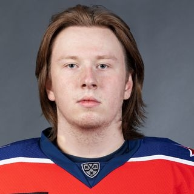
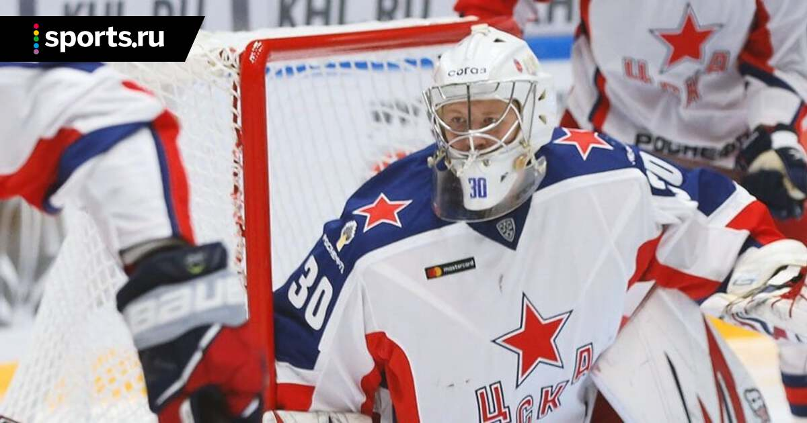
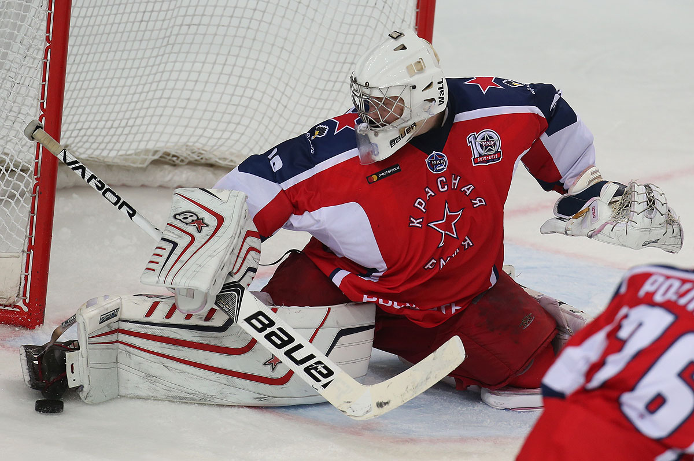
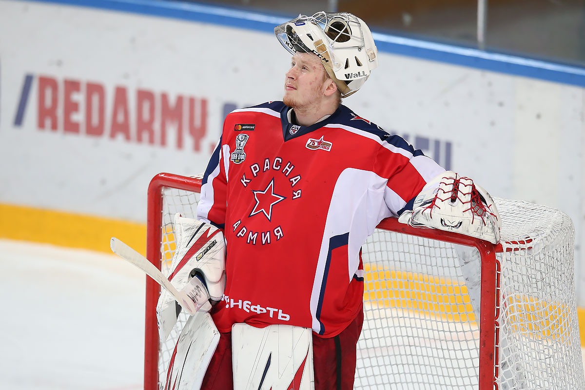

Всеволод Скотников №30
Вратарь

Сыгранные игры -
Коэффициент надёжности -
Процент отражённых бросков -
| Дата рождения |
Возраст |
Гражданство |
Рост |
Вес |
Хват |
Контракт до: |
Вид контракта: |
| 28 сентября 2001 |
22 |
Россия |
184 |
92 |
Левый |
30.04.2024 |
КХЛ - двусторонний |
Карьера:
ЦСКА 2020-2023, Звезда 2019-2023, Красная Армия 2017-2022



Достижения:
- Серебряный призер чемпионата мира среди юниоров (2019)
- Победитель чемпионата ВХЛ (2020)
- Обладатель Кубка Шёлкового пути (2020)
- Победитель регулярного чемпионата МХЛ (2022)
- Серебряный призёр Кубка Харламова (2022)
- Обладатель Кубка Западной конференции (2022)